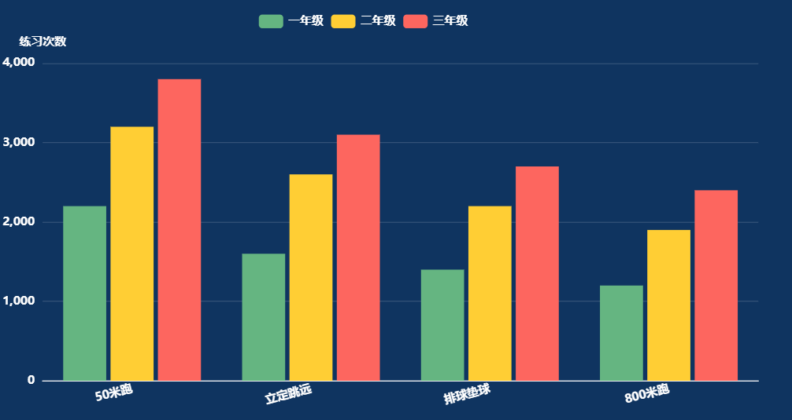
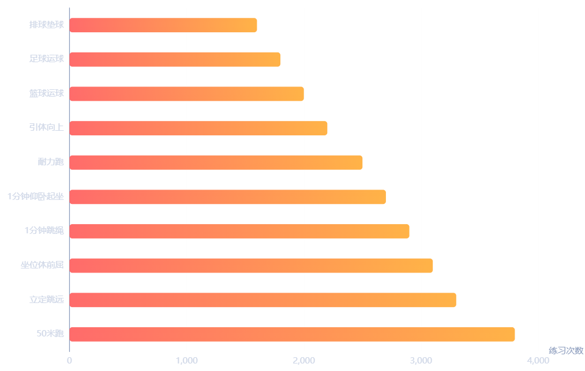

[ 图表 ] 项目练习次数
顶部筛选参数（仅本模块生效，不全局联动）
统计周期（模块顶部，选项：今日、本周、本月、本学期，默认本学期）
说明：切换仅当前模块数据刷新，不影响驾驶舱其他模块。
练习总次数
统计口径：根据本模块选定的统计周期、统计项目，统计全校学生经设备自动采集上报的"有效性==有效"运动记录条数。
学生参与率
统计口径：选定条件范围内，参与练习的独立学生数 / "状态 = 未毕业"的学生总数 ×100%
· 学生至少有 1 次有效练习即判定为参与；
· 结果保留 2 位小数。
人均练习数
统计口径：练习总次数 / 参与练习的独立学生数
· 结果保留 2 位小数。
项目次数统计(横向条形图)
1.自定义筛选参数 - 统计学段
· 全部学段：图表上方不展示任何学段标签，直接展示全校汇总数据。
· 分学段轮播
· 图表上方自动展示全校 + 本校已开通学段标签，不存在的学段不展示；
· 标签自动轮播，3–5 秒切换一次；
· 轮播切换时，图表同步刷新为对应学段数据。
2.统计口径
· 全部项目：当前统计周期、当前轮播定位学段内，按练习次数降序排列，展示练习次数 TOP10 的项目；
· 体测项目：展示全部"项目类别==体测"的运动项目，按当前统计周期、当前轮播定位学段内练习次数降序排列；
3.图表渲染
· 横轴：当前统计周期、当前轮播定位学段内练习次数；
· 纵轴：运动项目名称；
· 按练习量配色渐变。
年级练习分布(柱状图)
1.统计口径
· 数据范围：当前统计周期、全校范围；
· 项目范围：与上方项目练习次数统计图保持一致；
· 年级范围：每个运动项目下，取全校练习量 TOP3 的年级，各项目独立排序筛选。
2.渲染规则
· 横轴：运动项目名称；
· 纵轴：对应项目下各年级练习次数；
· 系列：每个项目统一展示全校练习量 TOP3 年级；
· 项目过多时：开启横向滚动条，适配宽度。
渲染描述
1.数据源
· 指标为必选固定渲染（练习总次数、学生参与率、人均练习数），不可取消；
· 图表为用户可选（项目次数统计、年级练习分布），勾选则渲染，不勾选则隐藏。
2.布局排版
· 上方数值区：横向排布 3 个必选指标标签；
· 下方图表区：根据用户勾选图表自适应展示；
· 整体卡片宽度：按照用户配置的宽度模式（M / N、整行）自适应占比；
· 整体卡片高度：用户手动配置高度不得小于【必选指标高度 + 选中图表所需最小高度】，小于则自动适配为最小高度。
3.样式规范
· 每个指标项为独立数值卡片，布局横向均匀排布；
· 数值下方标注指标名称；
· 条形图、柱状图区分线条 / 系列，配色与驾驶舱整体风格统一；
· 整体容器内边距、卡片间距保持统一。
学期运动项目练习情况
1822 次
练习总次数
17.65 %
学生参与率
1.78 次
人均练习数


本周
今日
本学期
本月
小学
全校
初中
各项目练习次数
各年级运动项目练习次数对比
项目运动情况


宽
高
应用
统计项目
统计学段
指标
图表